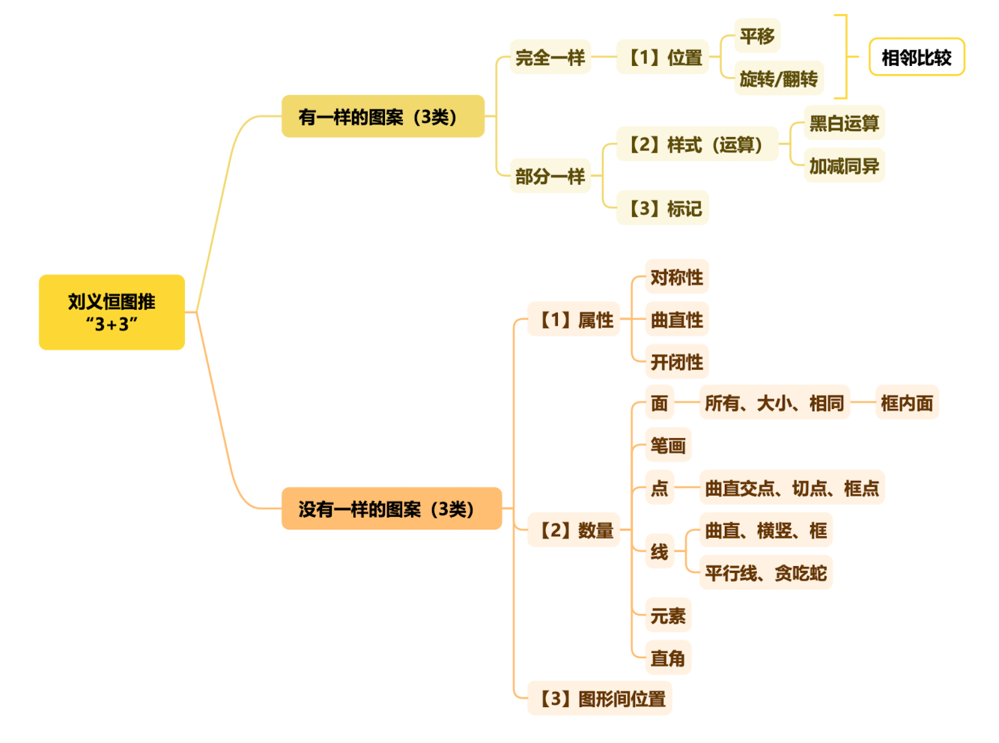
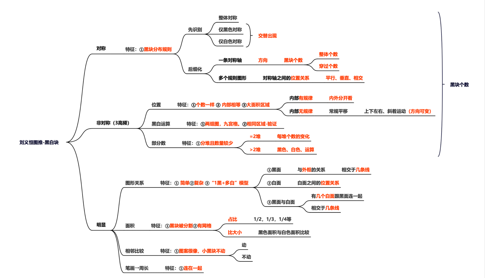
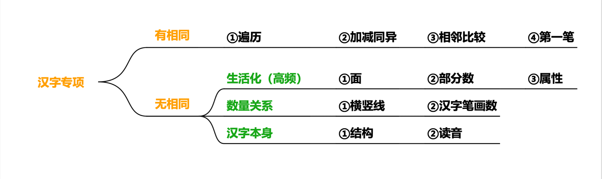
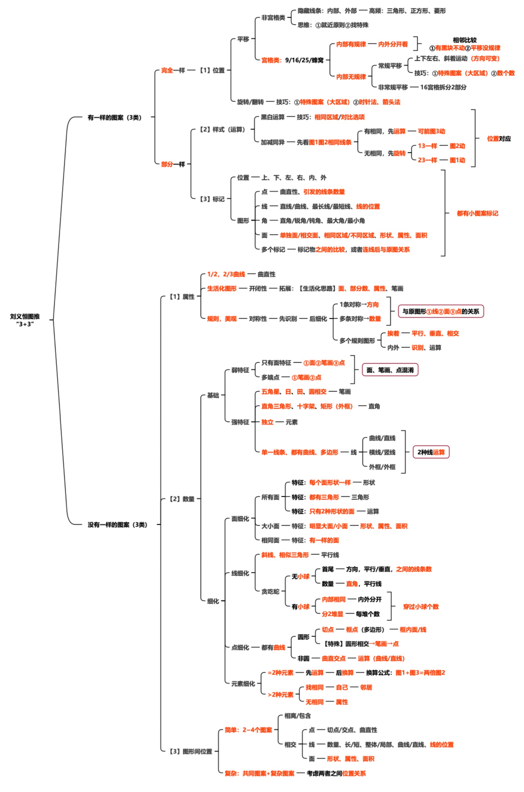

图形推理-思维导图
本文整理了推图61-老师的思维导图供学习/做题使用
缩略版思维导图

黑白块专项

汉字专项

完整版思维导图

本文整理了推图61-老师的思维导图供学习/做题使用




A. 光纤 B. ASCII C. 声音 D. 显示器
答案：C
A. 显示媒体 B. 表示媒体 C. 存储媒体 D. 传输媒体
答案：B
A. GBK→GB2312→GB18030
B. GB2312→GBK→GB18030
C. GB18030→GBK→GB2312
D. GB2312→GB18030→GBK
答案：B
A. 数字编码 B. 字音编码 C. 字形编码 D. 形音编码
答案：B
A. 采样→量化→编码
B. 量化→采样→编码
C. 编码→采样→量化
D. 采样→编码→量化
答案：A
A. 10kHz B. 20kHz C. 5kHz D. 40kHz
答案：B
A. 2.25MB B. 3MB C. 1.5MB D. 6MB
答案：A
A. 位图 B. 矢量图 C. 照片 D. BMP图像
答案：B
A. 音频 B. 静态图像 C. 视频 D. 文本
答案：B
A. MP3 B. JPEG C. PNG D. MPEG
答案：C
口诀：感觉是内容、表示是编码、显示是设备、存储是介质、传输是线路
[
数据量(Byte) = \frac{采样频率\times 量化位数\times 声道数\times 时间(s)}{8}
]
[
数据量(Byte) = \frac{分辨率\times 像素深度}{8}
]
本文整理了多媒体技术中媒体类型、汉字编码、文本输入等核心基础概念，适合备考与技术入门查阅。
本文整理计算机新技术核心考点，涵盖云计算、物联网、区块链等高频内容。
| 序号 | 核心考点口诀 |
|---|---|
| 1 | 云计算特征：按需服务、资源池化、弹性扩展、按需付费 |
| 2 | 云计算服务模式：IaaS（租硬件）、PaaS（租平台）、SaaS（租软件） |
| 3 | 云计算部署：公有云、私有云、混合云 |
| 4 | 物联网四层：感知层→网络层→平台层→应用层 |
| 5 | 物联网感知层：传感器、RFID，负责数据采集 |
| 6 | 物联网网络层：WiFi、蓝牙、5G、NB-IoT，负责数据传输 |
| 7 | 区块链特点：去中心化、不可篡改、可追溯、透明可信 |
| 8 | 区块链核心：分布式账本、共识机制、智能合约 |
| 9 | AI三要素：数据、算法、算力 |
| 10 | AI三大学习：监督（有标签）、无监督（无标签）、强化（试错奖励） |
| 11 | AI典型网络：CNN（图像）、RNN（时序）、Transformer（大模型） |
| 12 | 5G三大特性：高速率、低时延、大连接 |
| 13 | 大数据4V：大量(Volume)、多样(Variety)、高速(Velocity)、价值(Value) |
| 14 | 网络安全三性：机密性、完整性、可用性 |
| 15 | 等保2.0：覆盖云、物联网、大数据全场景 |
| 16 | 零信任：永不信任、始终验证、最小权限 |
| 17 | 东数西算：国家算力枢纽，绿色集约调度 |
| 18 | 信创：国产芯片、操作系统、数据库全替代 |
| 19 | 边缘计算：靠近终端处理，降低时延、节省带宽 |
本文整理了计算机操作系统核心知识点，涵盖软件基础、操作系统分类、进程管理、死锁、存储管理、文件管理、作业管理及设备管理与SPOOLing技术等高频考点，内容精简、条理清晰，可用于学习复习与考前快速记忆。
本文整理了操作系统速记清单
| 序号 | 核心考点口诀 |
|---|---|
| 1 | 软件三要素：程序、数据、文档 |
| 2 | 最接近硬件的系统软件：BIOS |
| 3 | 进程最基本特征：动态性 |
| 4 | 进程唯一标志：PCB |
| 5 | 进程三态：就绪、运行、阻塞 |
| 6 | 死锁四条件：互斥、请求保持、不剥夺、环路等待 |
| 7 | 虚拟内存：物理内存+硬盘页面文件 |
| 8 | 文件最基本功能：按名存取 |
| 9 | 相对路径：. 代表当前目录 |
| 10 | 最基本调度：进程调度 |
| 11 | 缓冲作用：缓和速度不匹配，减少中断，提高并行 |
| 12 | SPOOLing：独占设备变共享，典型应用打印机 |
| 13 | 分时系统特征：多路、交互、独立、及时 |
| 14 | 实时系统特征：及时响应、高可靠性 |